01
Le silence
Pas de moteur thermique, pas de sillage bruyant. Le foil électrique Lift vous porte au-dessus de la surface, presque sans un son.
La Croix-Valmer · Plage de Gigaro · Var
Initiation & location d'eFoil à Gigaro, aux portes de la réserve du Cap Lardier. Silencieux, accessible dès la première session — encadré par un moniteur.
Une eau translucide, un fond sableux : on lit le fond comme à travers une vitre.
Criques, pins parasols, côte préservée — au plus près d'une nature protégée.
La plupart des riders volent leurs premiers mètres dès la première séance, encadrés.
Des foils électriques Lift en carbone — silence, douceur, fiabilité.
L'expérience
Une fois la vitesse prise, la planche quitte l'eau. Plus de vagues, plus de moteur — la crique défile sous vos pieds.
Pas de moteur thermique, pas de sillage bruyant. Le foil électrique Lift vous porte au-dessus de la surface, presque sans un son.

Porté par une aile, à quelques centimètres de l'eau. Lisse, continu, sans effort — marcher sur une eau que l'on voit jusqu'au fond.
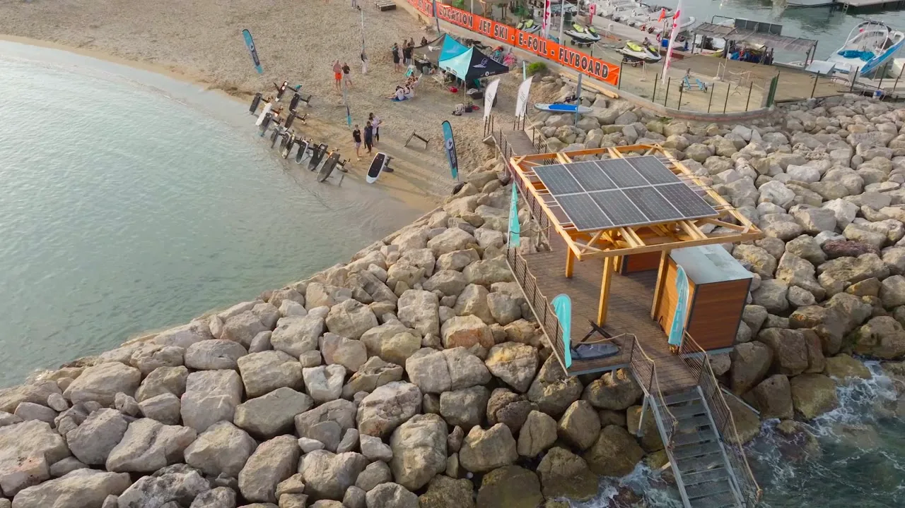
La puissance se règle à la télécommande, progressivement. Les premiers vols viennent souvent dès la première séance, toujours encadrés.
« Les eaux les plus claires du golfe, et la sensation de marcher dessus. »— Verbatim Google réel à insérer

Le spot
Au sud du golfe de Saint-Tropez, la plage de Gigaro ouvre sur la réserve naturelle du Cap Lardier : des criques bordées de pins, un fond sableux, une eau parmi les plus translucides de la côte. On s'élance du sable, on glisse au plus près de la nature — sans bruit, sans sillage, sans laisser de trace.
Le décor


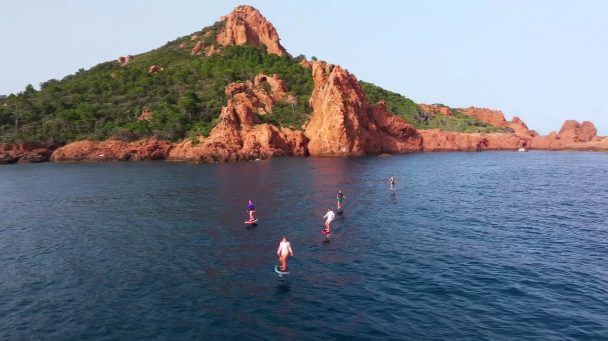
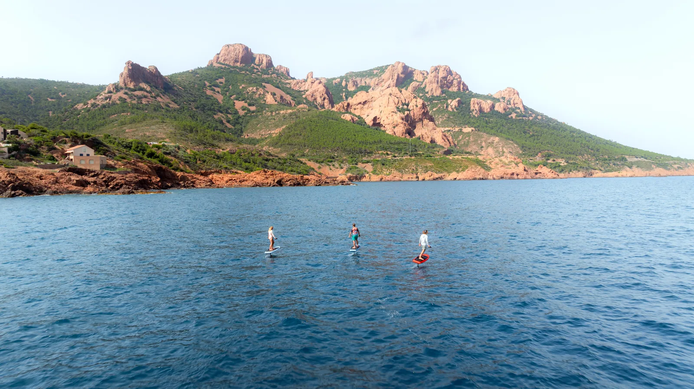
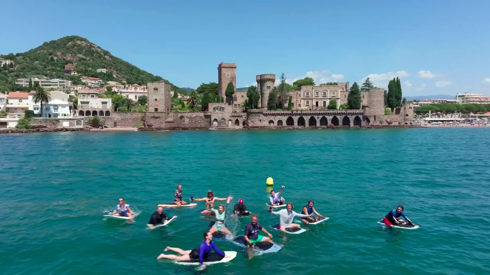
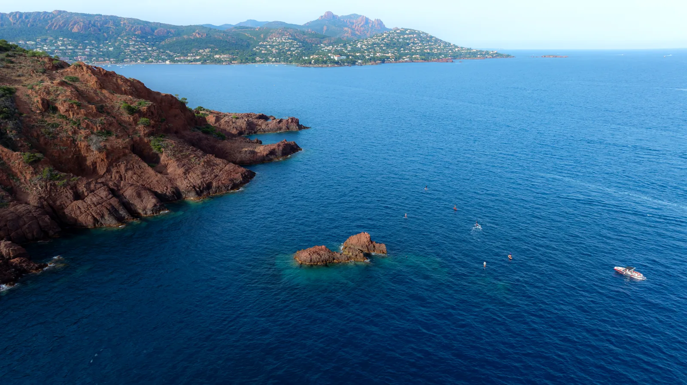
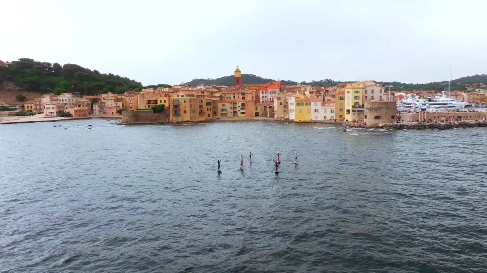
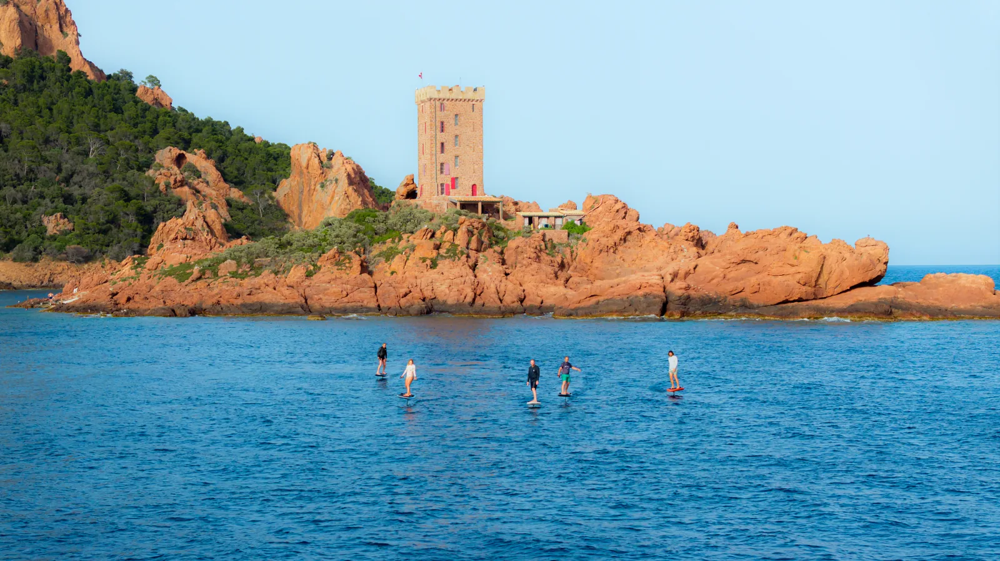
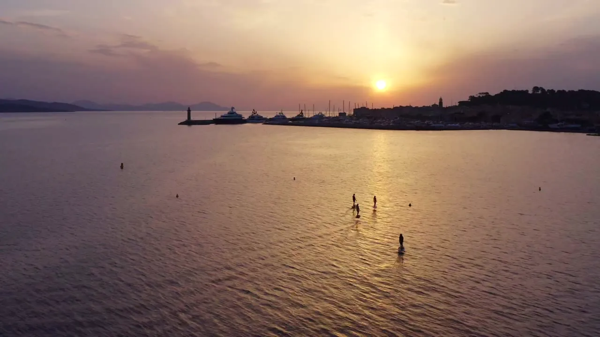

Comment ça se passe

Accueil sur le sable, consignes de sécurité et prise en main de la télécommande.

Combinaison si besoin, gilet, télécommande. La board Lift est prête au bord de l'eau.

Premiers mètres à plat, allongé puis à genoux. On apprivoise la vitesse, on lance le foil.

La planche s'élève, le moteur se fait oublier. Vous volez au-dessus de la crique, debout sur l'eau.
Vues du ciel


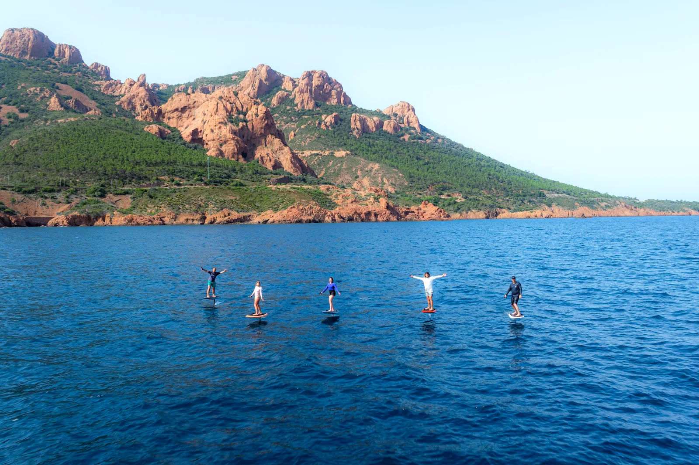

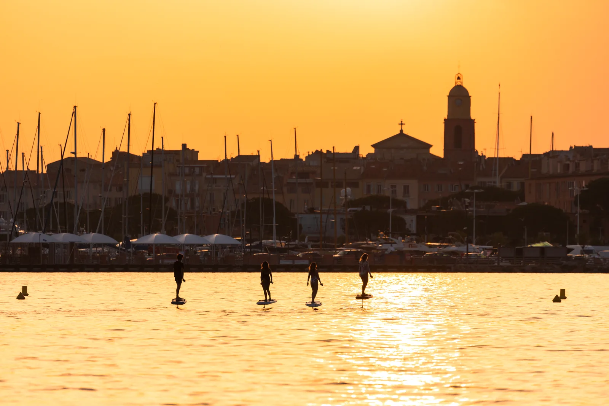

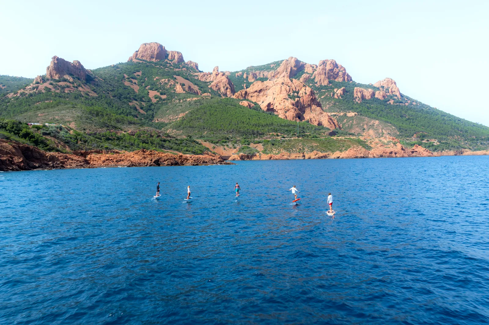
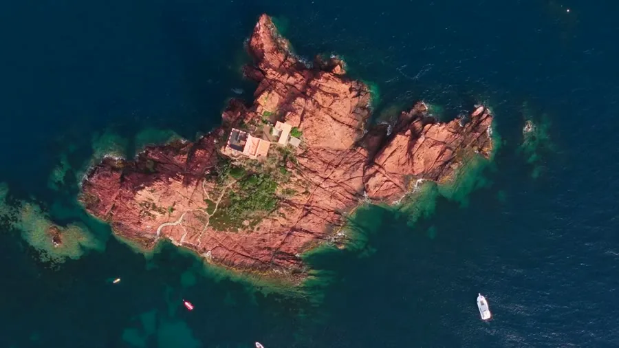

L'esprit Gigaro
Une longue plage de sable, le sentier du littoral, les pins. La session se glisse dans votre journée : on arrive le matin pour l'eau calme, on vole une heure, on reste pour le reste de la journée.
Offre & tarifs
Matériel, combinaison, moniteur et assurance inclus.
Découverte
{{PRIX}}la session · 1 h
Progression
{{PRIX_PACK}}pack 3 sessions
Offrir
Bon cadeaumontant libre
Ils ont volé
« {{AVIS_1}} — verbatim Google réel à insérer. »
{{CLIENT_1}}« {{AVIS_2}} — verbatim Google réel à insérer. »
{{CLIENT_2}}« {{AVIS_3}} — verbatim Google réel à insérer. »
{{CLIENT_3}}Réserver
Choisissez votre créneau. On s'occupe du reste : matériel, encadrement, et les eaux claires de Gigaro pour vous, le temps d'une session.
FAQ